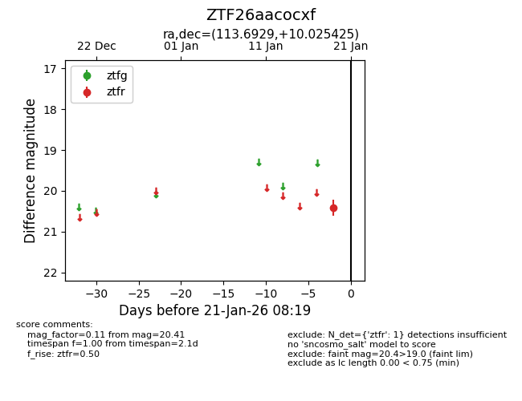
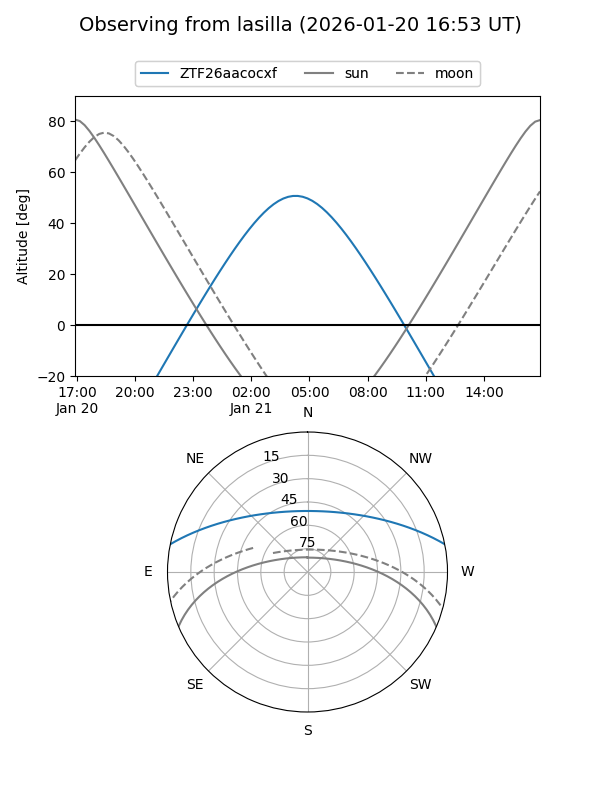
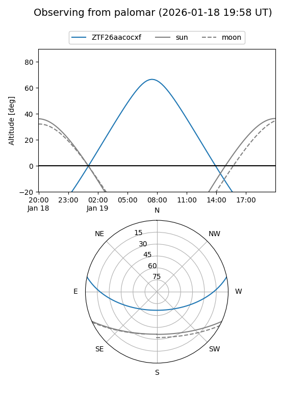

ZTF26aacocxf
Target ZTF26aacocxf at 2026-01-19 08:16
Aliases and brokers:
FINK: link
Lasair: link
ALeRCE: link
alt names
ZTF26aacocxf (ztf,fink_ztf)
Coordinates:
equatorial (ra, dec) = 113.6929,+10.02543
equatorial (HMS+DMS) = 07:34:46.30,+10:01:31.53
galactic (l, b) = (208.7606,+14.12882)
Flags:
Photometry:
last ztfr=20.41
1 ztfr detections
Lightcurve

Visibility


Additional plots